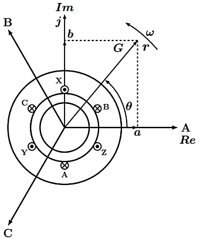
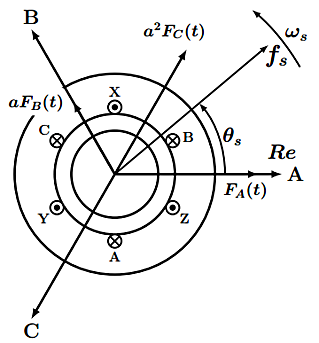

电机控制之空间矢量
此文主要讲解电流、电压的空间矢量表达式，以及电磁转矩的空间矢量表达式
参考书籍：《现代电机控制技术》第二版，王成元。
空间矢量
在电机内，可将在空间按正弦分布的物量表示为空间矢量。其本质是标量到空间复平面的数学映射，如图1-1所示，为电机轴向断面，在上面建立的空间复平面。

取定子 $A$ 相绕组的轴线作为实轴 $Re$，在空间复平面的任一矢量表示为：
$$
\begin{split}
\boldsymbol{r} &= R e^{j\theta} \\
&= Rcos\theta + jRsin\theta \\
&= a + jb
\end{split}
{\tag {1-1}} {\label {1-1}}
$$
式中，$\theta$ 称为空间矢量相位，$e^{j\theta}$ 可以看成向逆时针方向旋转 ${\theta}$ 角度，$\boldsymbol{r}$的顶点 $G$所描述的轨迹称为$\boldsymbol{r}$ 的运动轨迹。
磁动势矢量
如图1-2所示，为定子三相绕组产生的磁动势分布情况。

在空间复平面上，三相磁动势分别可以用以下空间矢量来描述：
$$
\begin{split}
\boldsymbol{f_A} &= F_A(t)e^{j0^\circ} \\[2ex]
\boldsymbol{f_B} &= F_B(t)e^{j120^\circ} \\[2ex]
\boldsymbol{f_C} &= F_C(t)e^{j240^\circ}
\end{split}
{\tag {1-2}} {\label {1-2}}
$$
式中，$F_A(t),\; F_B(t),\; F_C(t)$ 磁动势幅值，其正负分别由三相电流的正负来决定。
三相磁动势在空间复平面上的位置通过 $e^{j\theta}$ 来决定，即分别位于$0^\circ,\; 120^\circ,\; 240^\circ$ 的位置；而磁动势幅值的正负决定磁动势矢量$\boldsymbol{f_A},\; \boldsymbol{f_B},\; \boldsymbol{f_C}$ 的方向分别与 $A,\; B,\; C$ 三轴相同或相反。
由三相绕组产生的合成磁动势$\boldsymbol{f_s}$，可以表示为：
$$
\begin{split}
\boldsymbol{f_s} &= \boldsymbol{f_A} + \boldsymbol{f_B} + \boldsymbol{f_C} \\[2ex]
&= F_A(t)e^{j0^\circ} + F_B(t)e^{j120^\circ}+ F_C(t)e^{j240^\circ} \\[2ex]
&= a^0 F_A(t) + a^1 F_B(t) + a^2 F_C(t) \\[2ex]
&= F_A(t) + a F_B(t) + a^2 F_C(t)
\end{split}
{\tag {1-3}} {\label {1-3}}
$$
式中，$a^0 ,\; a^1, \; a^2$ 为空间算子，且有 $a^0 = e^{j0^\circ} = 1,\; a^1 = e^{j120^\circ} = a, \; a^2 = e^{j240^\circ}$ 。
而$F_A(t),\; F_B(t),\; F_C(t)$的表达式为：
$$
\begin{split}
F_A(t) &= {4 \over \pi} {1 \over 2} N_s k_{ws} i_A(t) \\
F_B(t) &= {4 \over \pi} {1 \over 2} N_s k_{ws} i_B(t) \\
F_C(t) &= {4 \over \pi} {1 \over 2} N_s k_{ws} i_C(t)
\end{split}
{\tag {1-4}} {\label {1-4}}
$$
式中，$N_s$ 为相绕组匝数， $k_{ws}$ 绕组因数，$k_{ws}<1$。从而，式$\eqref {1-3}$ 可以写成：
$$
\boldsymbol{f_s} = {4 \over \pi} {1 \over 2} N_s k_{ws} [i_A(t) + a i_B(t) + a^2 i_C(t)]
{\tag {1-5}} {\label {1-5}}
$$
通过式$\eqref {1-5}$可看出，可以通控制 $i_A(t),\; i_B(t),\; i_C(t)$ 来控制$\boldsymbol{f_s}$的运动轨迹，反过来，通过$\boldsymbol{f_s}$的期望运动轨迹来确定$i_A(t),\; i_B(t),\; i_C(t)$ 的时变规律，这就是矢量控制的基本方法。
电流和电压矢量
根据功率率不变约束，式$\eqref {1-5}$进一步可以写成：
$$
\boldsymbol{f_s} = {4 \over \pi} {1 \over 2} \sqrt{3 \over 2} N_s k_{ws} \boldsymbol{i_s} = {4 \over \pi} {1 \over 2} N_s k_{ws} [i_A + a i_B + a^2 i_C]
{\tag {1-6}} {\label {1-6}}
$$
对于满足功率不变约束：可将三相定子绕组合成的电流、电压矢量看成是一个单轴线圈产生的，且设定单轴线圈的有效匝数为定子每相绕组的 $\sqrt{3 \over 2}$ 倍，可使功率不变，功率不变即是单轴线圈的功率，和原三相绕组的功率相等。
根据式$\eqref {1-6}$，即可得到定子电流矢量 $\boldsymbol{i_s}$ 表达式：
$$
\boldsymbol{i_s} = \sqrt{2 \over 3} (i_A + a i_B + a^2 i_C)
{\tag {1-7}} {\label {1-7}}
$$
同样，定子电压空间矢量 $\boldsymbol{u_s}$ 表达式为：
$$
\boldsymbol{u_s} = {\sqrt {2 \over 3}} (u_A + a u_B + a^2 u_C)
{\tag {1-8}} {\label {1-8}}
$$
磁链矢量
对于定子磁连矢量 ${\boldsymbol \psi_s}$ 有：
$$
{\boldsymbol \psi_s} = {\sqrt {2 \over 3}} (\psi_A + a \psi_B + a^2 \psi_C)
{\tag {1-9}} {\label {1-9}}
$$
三相同步电机转矩控制
隐极与凸极
隐极式三相同步电机的电磁转矩表达式为：
$$
\begin{split}
t_e &= p_0 \boldsymbol{\psi_f} \times \boldsymbol{i_s} \\
&= p_0 \psi_f i_s sin\beta
\end{split}
{\tag {2-1}} {\label {2-1}}
$$
式中的 $p_0$ 为电机极对数，$\beta$为转矩角，$\boldsymbol{\psi_f}$ 为转子励磁磁链矢量。
凸极式三相同步电机的电磁转矩表达式为：
$$
\begin{split}
t_e &= p_0 \boldsymbol{\psi_s} \times \boldsymbol{i_s} \\
&= p_0 [\psi_f i_s sin\beta + {1 \over 2} (L_d - L_q)i_s^2 sin2\beta]
\end{split}
{\tag {2-2}} {\label {2-2}}
$$
式中的 $p_0$ 为电机极对数，$\beta$为转矩角，$\boldsymbol{\psi_s}$ 为定子磁链矢量，此式包括的励磁转矩和磁阻转矩。
标量控制与矢量控制
同步电机机械角速度为：
$$
{\Omega_r} = {2{\pi}f_s \over p_0}
$$
式中，$f_s$ 为电源频率。
传统的控制方法，是通过改变定子电压频率来调节电机转速，这是同步电机他控式变频调速的基本原理。但这种控制方式，只能控制电枢反应磁场旋转速度，不能控制转矩角$\beta$，也就不能控制转子速度和位置，属于一种标量控制。
而矢量控制是直接控制电流矢量 $\boldsymbol{i_s}$，既可以控制 $\boldsymbol{i_s}$ 的大小，也可以控制 $\boldsymbol{i_s}$ 的方向，即可以直接控制转矩角 $\beta$。
转载请注明来源，欢迎对文章中的引用来源进行考证，欢迎指出任何有错误或不够清晰的表达。可以在下面评论区评论，也可以邮件至 [ yehuohan@gmail.com ]
文章标题:电机控制之空间矢量
本文作者:z000tech
发布时间:2017-07-16, 23:27:43
最后更新:2018-04-12, 10:25:29
原始链接:http://yehuohan.github.io/2017/07/16/笔记/Others/Motor/电机控制之空间矢量/版权声明: "署名-非商用-相同方式共享 4.0" 转载请保留原文链接及作者。